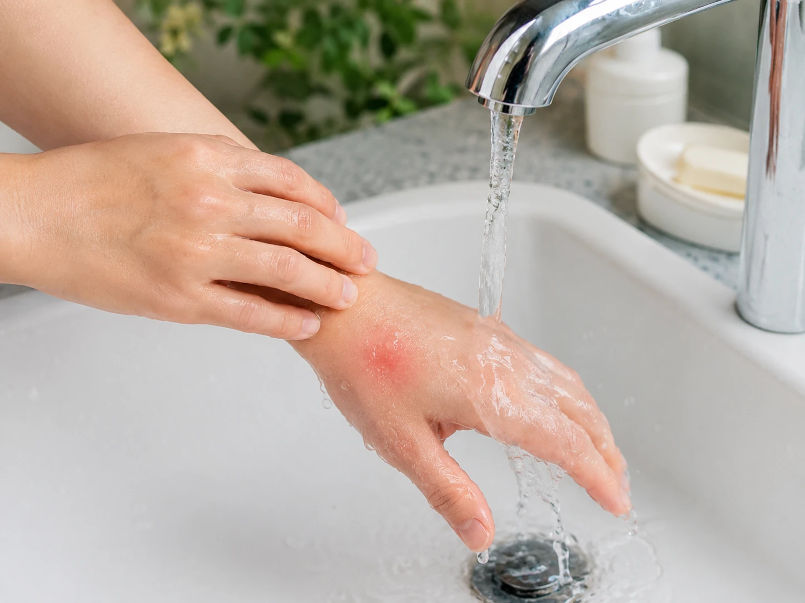
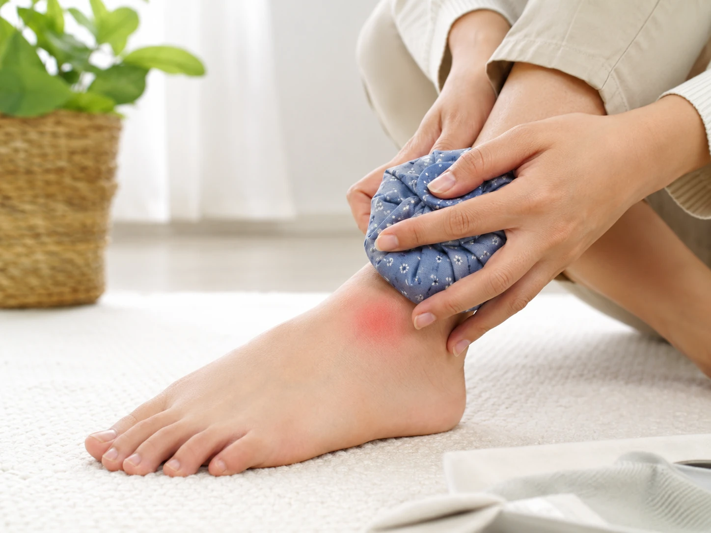
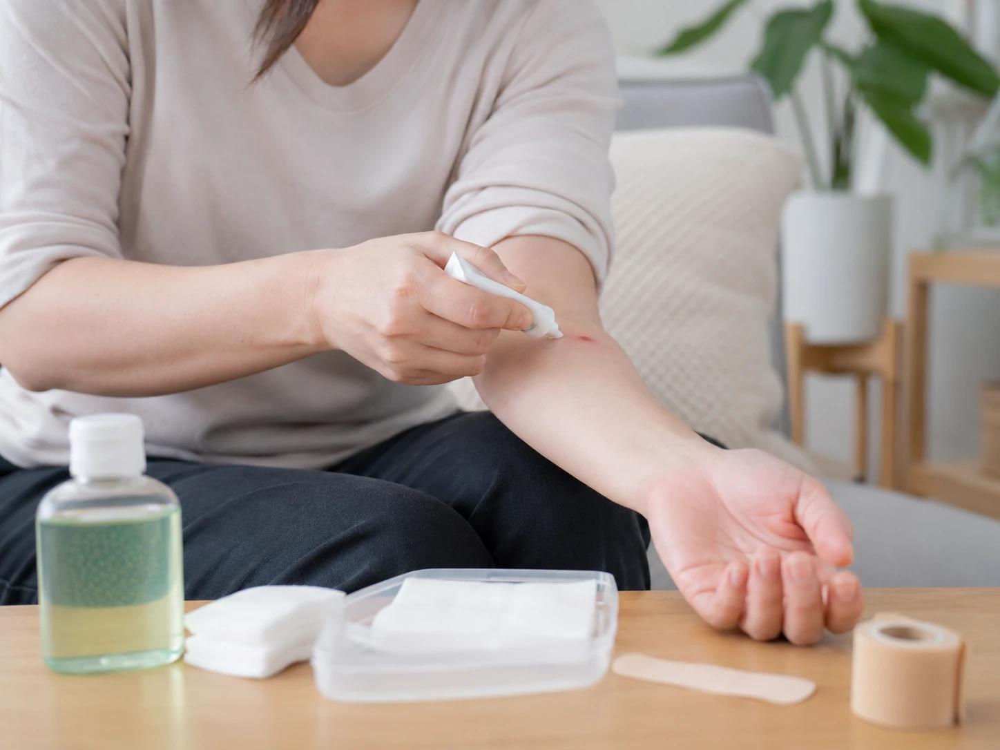

지네에 물렸을 때, 차갑게 해야 할까 뜨겁게 해야 할까 진짜 헷갈리는 대처법
여름밤이나 장마철이 되면 지네가 집 안으로 들어왔다는 이야기가 갑자기 많아집니다. 특히 바닥에 놓인 수건, 신발, 이불 주변에서 발견됐다는 글을 보면 괜히 발끝이 간질거리는 기분까지 들죠.
더 당황스러운 건 지네에 물렸을 때 대처방법을 검색해보면 말이 갈린다는 점입니다. 어떤 글은 얼음찜질을 하라고 하고, 어떤 글은 뜨거운 물이나 따뜻한 수건을 대라고 말합니다. 저는 이런 정보가 제일 무섭더라구요. 아픈 사람은 지금 당장 뭘 해야 하는데, 검색 결과가 서로 싸우고 있으면 손이 멈추니까요.
그래서 이 글은 겁을 주려고 쓰는 글이 아닙니다. 지네 물림이 생겼을 때 집에서 먼저 확인할 것, 병원에 가야 하는 증상, 그리고 차갑게 할지 따뜻하게 할지에 대한 현실적인 기준을 정리하려고 합니다. 읽다 보면 아마 “나였으면 어떻게 했을까”라는 생각이 드실 겁니다.
차갑게 하라는 사람과 뜨겁게 하라는 사람, 둘 중 누가 맞다고 봐야 할까요?
결론부터 말하면 일반 가정에서 가장 안전하게 접근하기 쉬운 방법은 물린 부위를 씻고, 천으로 감싼 냉찜질을 짧게 반복하는 쪽입니다. 지네에 물렸을 때 통증과 붓기가 올라오는 경우가 많기 때문에 차가운 찜질은 통증 완화와 부기 관리에 도움이 될 수 있습니다.
그런데 여기서 반전이 있습니다. 뜨거운 쪽 이야기가 완전히 허무맹랑한 말은 아니라는 점입니다. 일부 자료에서는 온열 자극이나 온수 처치가 통증 완화에 도움이 됐다는 이야기도 있습니다. 문제는 집에서 ‘뜨겁게’라는 말을 그대로 따라 하다가 화상을 입을 수 있다는 겁니다. 저는 이 지점이 제일 위험하다고 봅니다.
특히 아이, 어르신, 피부 감각이 둔한 분, 당뇨나 혈액순환 문제가 있는 분은 뜨거운 물이나 뜨거운 수건을 함부로 대면 지네 독보다 화상 문제가 더 커질 수 있습니다. 그래서 개인적으로는 “뜨겁게 지진다” 같은 식의 민간요법은 권하고 싶지 않습니다.
지네 물렸을때 대처방법을 찾는 분들이 가장 많이 헷갈리는 부분이 바로 여기입니다. 통증이 너무 강하면 뭔가 강한 조치를 해야 할 것 같지만, 실제로는 상처를 더 자극하지 않는 게 먼저입니다.

병원까지 갈 정도냐고 묻는다면, 저는 이 증상부터 보겠습니다
지네 물림은 대부분 통증, 붓기, 붉어짐, 저릿함 정도로 지나가는 경우가 많지만 모든 상황을 가볍게 보면 안 됩니다. 숨이 답답하거나 두드러기가 전신으로 퍼지거나, 입술과 얼굴이 붓거나, 어지러움과 구토가 심하면 알레르기 반응 가능성을 생각해야 합니다.
저라면 손가락이나 발가락처럼 붓기가 빠르게 조이는 부위에 물렸을 때도 더 신경 쓸 것 같습니다. 반지를 끼고 있다면 붓기 전에 빼는 게 좋고, 물린 부위가 팔이나 다리라면 가능하면 살짝 높게 두는 편이 낫습니다.
또 하나는 상처가 점점 뜨거워지고 고름처럼 보이는 분비물이 생기거나, 붉은 선이 위로 번지는 느낌이 있을 때입니다. 이건 단순한 지네 독 반응이 아니라 감염 문제로 넘어갈 수 있습니다. 저는 이런 증상을 보면 “하루만 더 보자”보다 진료 쪽이 낫다고 생각합니다.
어린아이, 임신부, 기저질환이 있는 분, 이전에 벌이나 벌레에 심한 알레르기 반응이 있었던 분이라면 더 보수적으로 움직이는 게 좋습니다. 지네에 물렸을 때 병원에 가야 하는 증상은 겁을 먹기 위한 기준이 아니라, 시간을 놓치지 않기 위한 안전선에 가깝습니다.

민간요법으로 버틸지 바로 진료를 볼지, 이 부분은 댓글도 갈릴 것 같습니다
지네에 물렸을 때 된장을 바른다거나, 소주로 닦는다거나, 독을 빼야 한다며 상처를 누르는 이야기도 아직 보입니다. 저는 이런 방식은 피하는 쪽이 맞다고 봅니다. 상처를 오염시키거나 피부를 더 손상시킬 수 있기 때문입니다.
가장 현실적인 순서는 단순합니다. 안전한 곳으로 이동하고, 흐르는 물과 비누로 씻고, 장신구를 빼고, 냉찜질을 짧게 반복하면서 증상 변화를 봅니다. 통증이 너무 심하거나 전신 반응이 있으면 병원이나 응급상담을 이용하는 것이 맞습니다.
개인적으로 지네 물림에서 제일 무서운 건 지네 자체보다 “괜찮겠지”와 “민간요법으로 버티자”가 섞이는 순간이라고 생각합니다. 반대로 너무 겁을 먹고 모든 상황을 응급실로만 연결하는 것도 현실적이지는 않죠. 그래서 기준을 알고 있는 게 중요합니다.

지네에 물렸을 때 차갑게 해야 하는지 뜨겁게 해야 하는지 논쟁은 앞으로도 계속 나올 것 같습니다. 다만 집에서 혼자 판단해야 하는 순간이라면, 저는 화상 위험이 있는 뜨거운 처치보다 깨끗이 씻고 냉찜질하며 증상을 관찰하는 쪽을 먼저 선택하겠습니다.
결국 핵심은 “참을 수 있느냐”가 아니라 “위험 신호가 있느냐”입니다. 통증이 있어도 국소 반응으로 가라앉는지, 아니면 호흡곤란·전신 두드러기·심한 부종·감염 의심으로 번지는지를 봐야 합니다.
여러분은 지네에 물렸을 때 냉찜질을 먼저 하실 것 같나요, 아니면 따뜻한 처치를 먼저 떠올리실 것 같나요. 저는 안전성까지 생각하면 냉찜질 쪽에 마음이 갑니다. 다만 증상이 심하면 집에서 검색만 붙잡고 있기보다 진료를 받는 쪽이 훨씬 낫다고 봅니다.
관련 키워드: 지네에 물렸을 때, 지네 물림, 지네 물렸을때 대처방법, 지네 독, 지네 물림 응급처치, 병원 가야 하는 증상